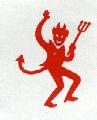

[Date Prev][Date Next][Thread Prev][Thread Next][Date Index][Thread Index]
David Angell and html
- To: jy@jya.com
- Subject: David Angell and html
- From: bill payne <billp@nmol.com>
- Date: Sun, 27 Dec 1998 16:17:12 -0700
- CC: j orlin grabbe <kalliste@aci.net>, armoral@flash.net, dpcintrn@osd.pentagon.mil, abumujahid@taliban.com, cypherpunks@toad.com, ukcrypto@maillist.ox.ac.uk, tcmay@got.net, Philadelphia@fbi.gov, Mediacg@ibm.net, baltimore@fbi.gov, CINCINNATI@fbi.gov, houston@fbi.gov, knoxville@fbi.gov, los.angeles@fbi.gov, miami@fbi.gov, st.louis@fbi.gov, su@fbi.gov, seattle@fbi.gov, newyork@fbi.gov, junger@upaya.multiverse.com, gbroiles@netbox.com
- Sender: owner-cypherpunks@Algebra.COM
Sunday 12/27/98 4:13 PM
John Young
I went to http://www.page1book.com this morning looking for books on
HLML.
I asked the clerk what was a good book on html. The clerk pointed
me to HTML 4 Unleashed, second edition, by Rick Darnell, et al.
A guy standing next to me volunteered that he wrote books on
computing.
He advised getting a reference book, looking at examples on Internet,
RESEARCH the code, then modify the RESEARCHED the code.
He introduced himself. David Angell.
ISDN for Dummies (--For Dummies) ~ Usually ships in 2-3 days
David Angell / Paperback / Published 1996
Our Price: $19.99 ~ You Save: $5.00 (20%) http://www.amazon.com
He was visiting his mother who lives in abq.
Angell now lives in Austin TOO.
I am on the net to download THE [your?] code at
http://jya.com/crypto.htm.
To RESEARCH it, of course.
I am experimenting with <BODY BACKGROUND="devil2.jpg"> for background
for Pro Se Litigation with the US Federal Government.
http://www.jya.com/nsasuit.txt
Keep a good sense of humor. And up-wind too, of course.
http://www.zolatimes.com/v2.29/bw1.html
I CONTINUE to recall Bob Serna’s joke.
Q What is the difference between a terrorist
and a woman with pms?
A You can negotiate with a terrorist.
We got to get this UNFORTUNATE MATTER settled BEFORE IT GETS
WORSE!
Later
bill

Thursday 12/10/98 5:08 PM
J Kevin O'Brien, Chief
Freedom of Information-Privacy Act Section
Office of Public Affairs
U.S. Department of Justice
Federal Bureau of Investigation
Washington D. C. 20535
O'Brien
I received your form letter dated DEC 02 1998.
YES, I want the information!
I return your completed form.
Sandia assigned me to break electronic locks for the FBI/ERF.
SSA Mike Uttaro was my direct contact. His boss was SSA Mike McDevitt.
The FBI is breaking the law under the veil of classification abuse.
I may write another article
---
False Security
William H. Payne
Abstract
Wiegand wire plastic credit card-sized entry access credentials are
the easiest to counterfeit. Yet Access Control & SECURITY SYSTEMS
INTEGRATION, September 1998 , www.prox.com http/www.securitysolutions.com
ran a full page ad.
"Why 130 million Wiegand cards are in use throughout the world .
The most secure of all access card technologies.
HID Wiegand cards are virtually impossible to counterfeit... any attempt to
alter them destroys them! ...
Since no direct contact with the card is required, they are totally enclosed,
making them absolutely immune to the elements and a frustration of
vandals. ...
The secrets to the security of an
HID Wiegand card are those little
enclosed wire strips. Once corrupted,
they won't work."
Purpose of this article is to tell you how to counterfeit Wiegand
http://www.securitysolutions.com/ and give you insight into Real Security.
Fumble, Bumble and Inept Funds Electronic Lock Breaking at
Sandia National Laboratories.
http://www.jya.com/fbi-en7898.htm
False Security
William H. Payne
Abstract
Wiegand wire plastic credit card-sized entry access credentials are
the easiest to counterfeit. Yet Access Control & SECURITY SYSTEMS
INTEGRATION, September 1998 , www.prox.com http/www.securitysolutions.com
ran a full page ad.
"Why 130 million Wiegand cards are in use throughout the world .
The most secure of all access card technologies.
HID Wiegand cards are virtually impossible to counterfeit... any attempt to
alter them destroys them! ...
Since no direct contact with the card is required, they are totally enclosed,
making them absolutely immune to the elements and a frustration of
vandals. ...
The secrets to the security of an
HID Wiegand card are those little
enclosed wire strips. Once corrupted,
they won't work."
Purpose of this article is to tell you how to counterfeit Wiegand
http://www.securitysolutions.com/ and give you insight into Real Security.
Fumble, Bumble and Inept Funds Electronic Lock Breaking at
Sandia National Laboratories.
http://www.jya.com/fbi-en7898.htm
---
Counterfeiting Wiegand Wire Access Credentials
Bill Payne
October 16,1996
Abstract
Wiegand wire access credentials are easy and
inexpensive to counterfeit.
Access Control & Security Systems Integration magazine, October
1996 [http://www/securitysolutions.com] published the article,
Wiegand technology stands the test of time
by PAUL J. BODELL, page 12
Many card and reader manufacturers offer Wiegand (pronounced
wee-gand) output. However, only three companies in the
world make Wiegand readers. Sensor Engineering of Hamden
Conn., holds the patent for Wiegand, and Sensor has licensed
Cardkey of Simi Valley, Calif., and Doduco of Pforzheim,
Germany, to manufacture Wiegand cards and readers. ... A
Wiegand output reader is not the same thing as a Wiegand
reader, and it is important to understand the differences.
In brief, Wiegand reader use the Wiegand effect to
translate card information around the patented Wiegand
effect in which a segment of a specially treated wire
generates an electronic pulse when subjected to a specific
magnetic field. If the pulse is generated when the wire is
near a pick-up coil, the pulse can be detected by a circuit.
Lining up several rows of wires and passing them by a cold
would generate a series of pulses. Lining up two rows of
wires - calling on row "zero bits" and the other "one bits"
- and passing them by two different coils would generate two
series of pulses, or data bits. These data bits can then be
interpreted as binary data and used to control other
devices. If you seal the coils in a rugged housing with
properly placed magnets, and LED and some simple circuitry,
you have a Wiegand reader. Carefully laminate the special
wires in vinyl, and artwork, and hot-stamp a number on the
vinyl, and you have a Wiegand card.
IN THE BEGINNING
Wiegand was first to introduce to the access control
market in the late 1970s. It was immediately successful
because it filled the need for durable, secure card and
reader technology.
Embedded in the cards, Wiegand wires cannot be altered or
duplicated. ...
Bodell's Last statement is incorrect.
Tasks for EASILY counterfeiting Wiegand wire cards are
1 Locate the wires inside the card to read the 0s and 1s.
2 Build an ACCEPTABLE copy of the card.
Bodell's clear explanation of the working of a Wiegand card can
be visualized
zero row | | |
one row | |
binary 0 1 0 0 1
representation
Solutions to Task 1
A X-ray the card
B MAGNI VIEW FILM, Mylar film reads magnetic fields ...
Edmunds Scientific Company, catalog 16N1, page
205, C33,447 $11.75
is placed over the top of the Wiegand card.
COW MAGNET, Cow magnetics allow farmers to trap metal in the
stomachs of their cows. Edmunds, page 204, C31,101 $10.75
is placed under the card.
Location of the wires is easily seen on the green film.
Mark the position of the wires with a pen.
Next chop the card vertically using a shear into about 80/1000s
paper-match-sized strips.
Don't worry about cutting a wire or two.
Note that a 0 has the pen mark to the top. A 1 has the pen mark
at the bottom.
Take a business card and layout the "paper match"-like strips to
counterfeit the card number desired.
Don't worry about spacing. Wiegand output is self-clocking!
Tape the "paper-match - like" strips to the business card.
Only the FUNCTION of the card needs to be reproduced!
History
Breaking electronic locks was done as "work for others" at Sandia
National Laboratories beginning in 1992 funded by the Federal
Bureau of Investigation/Engineering Research Facility, Quantico,
VA.
The FBI opined that this work was SECRET/NATIONAL SECURITY
INFORMATION.
Details of the consequences of this work are covered in
Fired Worker File Lawsuit Against Sandia
Specialist Says He Balked When Lab Sought Electronic
Picklock Software, Albuquer Journal, Sunday April 25, 1993
State-sanctioned paranoia, EE Times, January 22, 1996
One man's battle, EE Times, March 22, 1994
Damn the torpedoes, EE Times, June 6, 1994
Protecting properly classified info, EE Times, April 11,
1994
DOE to scrutinize fairness in old whistle-blower cases,
Albuquerque Tribune, Nov 7 1995
DOE boss accelerates whistle-blower protection, Albuquerque
Tribune, March 27, 1996
DOE doesn't plan to compensate 'old' whistle-blowers with
money, Albuquerque Tribune September 27, 199
---
Here is one of my previous articles.
http://www.zolatimes.com/v2.29/bw1.html
http://www.aci.net/kalliste/bw1
We should get this settled before IT GETS WORSE.
Black and white is an example of WORSE.
bill payne
{kind=link}